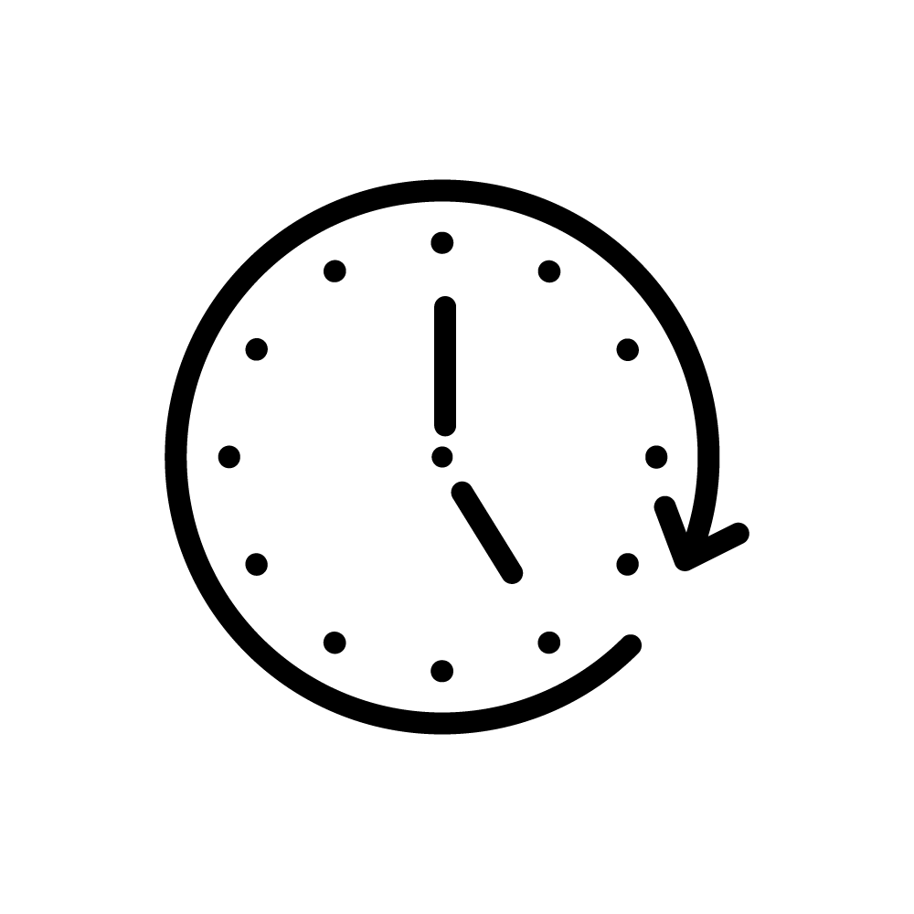
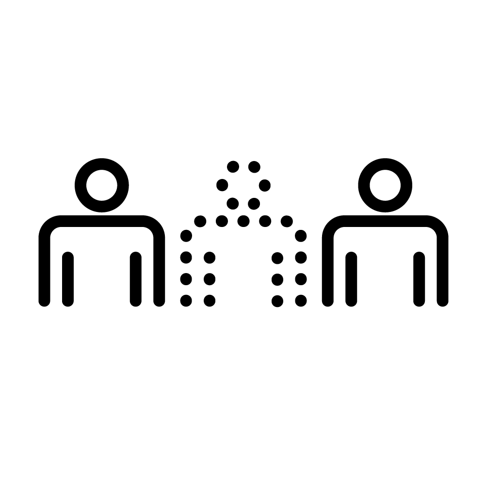
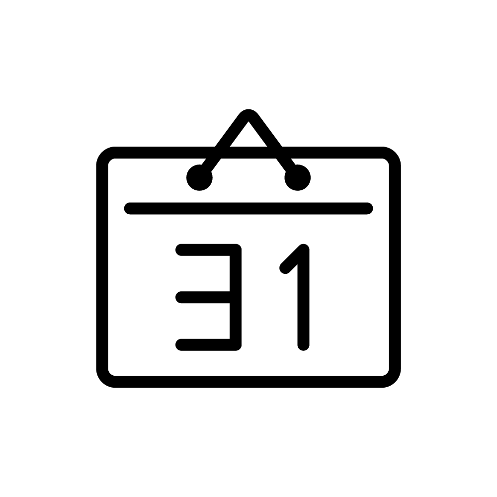
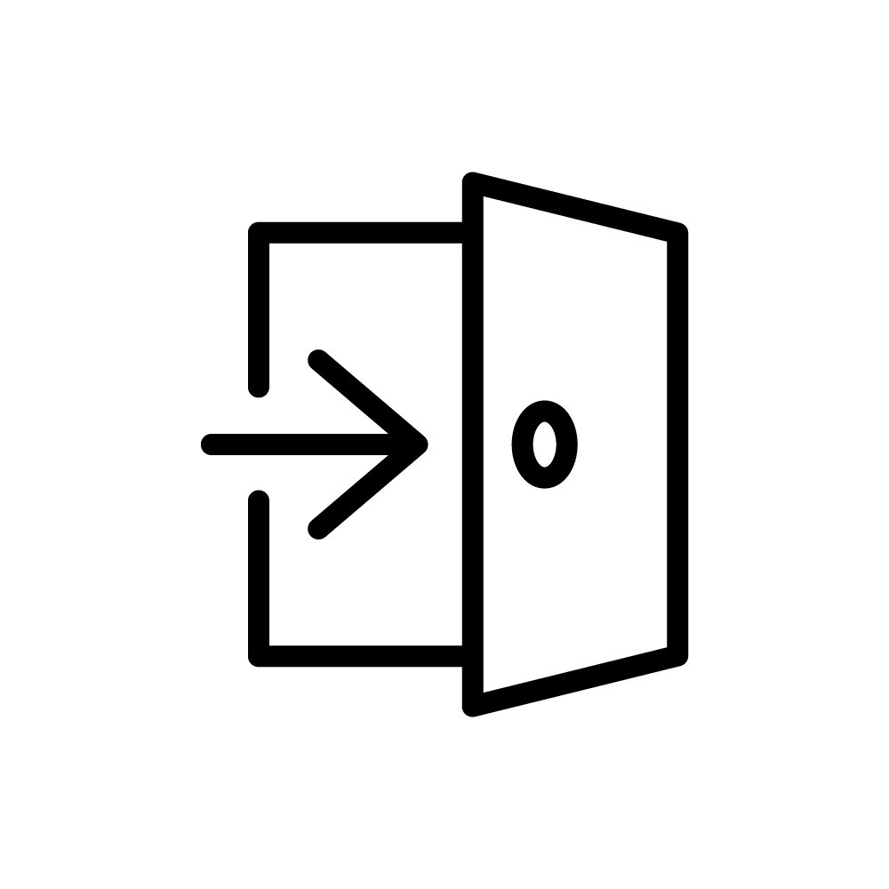
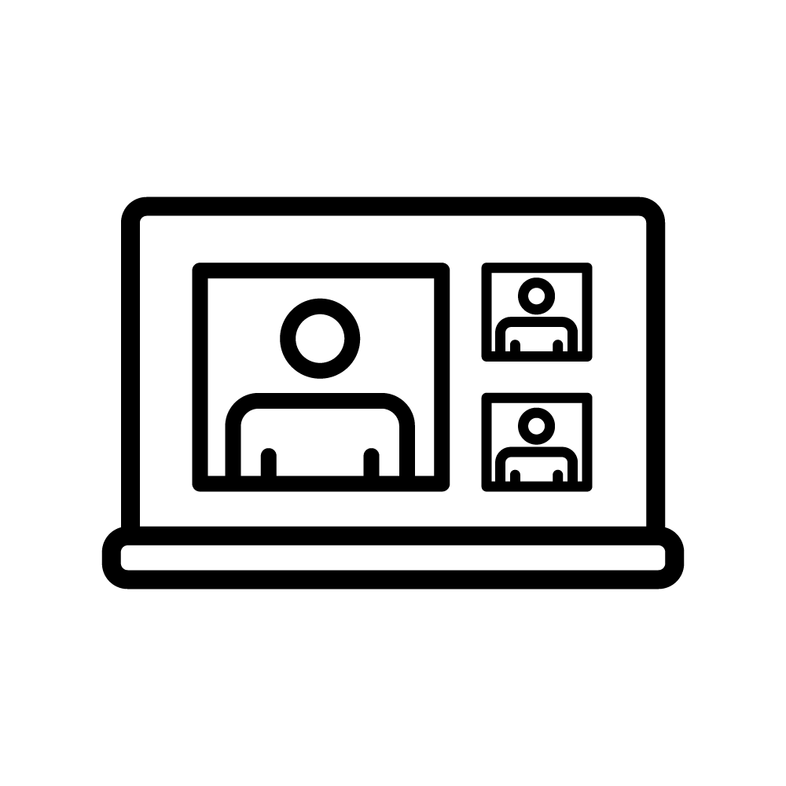
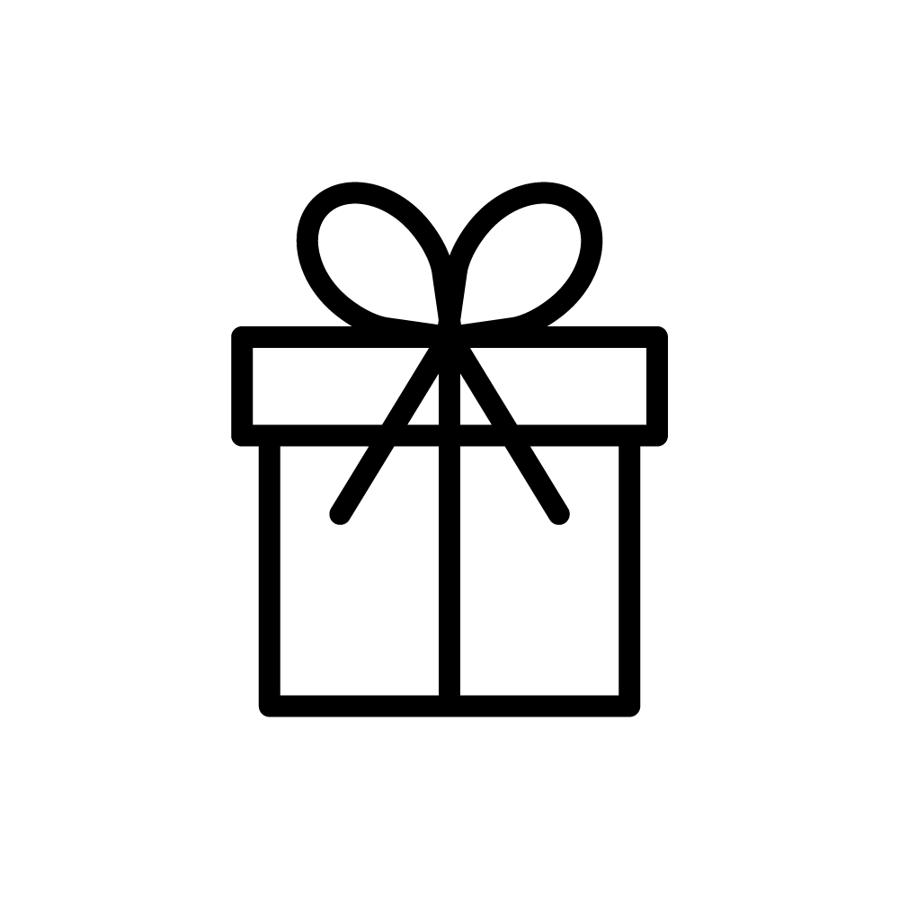

お知らせ
採用サイトをリニューアルいたしました。
お客様のビジネスを支えるための最先端のシステムソリューションを提供しています。
技術革新を推進する当社では、システムエンジニアが主役です。
高度なトレーニングプログラムやメンター制度を通じて、あなたのスキルアップをサポートします。
プロジェクトごとに異なる課題を解決し、クライアントの期待を超える成果を追求しています。
事業内容
システム開発
クライアントのニーズに合わせたカスタムシステムを提供します。
セキュリティ対策
情報セキュリティの強化とリスク管理をサポートします。
ITコンサルティング
最適なITソリューションを提案し、導入支援を行います。
システム保守・運用
導入後のシステムの運用サポートと保守サービス。
会社概要
| 会社名 | 株式会社SAMPLE |
|---|---|
| 設立 | 20XX年X月X日 |
| 代表者 | 代表取締役社長 東京太郎 |
| 資本金 | 10,000,00円 |
| 事業内容 | システム開発、ソフトウェア開発、ITコンサルティング、システム保守・運用 |
| ホームページ | https://www.saiyo-sample.com | 所在地 | 123-4567 東京都渋谷区桜丘町1-2-3 |
|---|---|
| 主要取引先 | 株式会社SAMPLE、株式会社DEF、株式会社GHI |
| 取引銀行 | 三井住友銀行 渋谷支店 |
| 従業員数 | 200名（2024年現在） |
社内データ
従業員数
000
名平均年齢
000
歳有給休暇取得率
000
%
平均残業時間
000
時間
離職率
000
%
平均勤続年数
000
年年間休日
000
日育児休暇取得率
000
%女性比率
000
%
他業種からの転職率
000
%
リモートワーク率
000
%
お弁当持参率
000
%最新のトレンドに対応することが求められるため、自己成長を実感できます。
システムエンジニアの仕事は、日々の業務を通じて新たなチャレンジに満ちています。
クライアントとの打ち合わせ、システムの設計・開発、テスト、そして導入後のフォローアップまで、
一つのプロジェクトには多くのステップがあります。
多彩な業務を経験しながら、自身のスキルを高めることができる環境で、あなたの成長をサポートします。
仕事の流れ
1要件定義
クライアントとの打ち合わせを通じて、システムの機能や性能、使用目的などの要件を明確にする。
2設計
要件に基づき、システム全体の構造や各機能の設計を行う。詳細設計書を作成し、実装の準備を整える。
3開発・プログラミング
設計書に従って、プログラムのコーディングを行い、必要な機能を実装する。
4テスト
開発したシステムが要件通りに動作するかを確認するためのテストを実施。不具合があれば修正する。
5導入・運用保守
システムをクライアントの環境に導入し、運用開始後のサポートや定期的なメンテナンスを行う。
クライアントからのフィードバックを受け、システムの改善を行います。
システムの運用をサポートし、定期的な保守を行います。
ITの力で未来を描く、エンジニアの素顔
私たちは、単なる技術者ではなく、ビジネスの課題を解決するプロフェッショナルです。
お客様と共に未来を見据え、新しい価値を創造するために日々努力しています。
その裏側には、確かな技術力と創造力が息づいています。
スタッフの声
最先端の技術に触れながら
自己成長できる環境
システムエンジニア 2018年入社
S.K.さん
システムエンジニアとして働く中で最もやりがいを感じる瞬間は？
やはり、自分が開発したシステムがクライアントの業務に役立ち、喜んでもらえた時です。特に、長期間かけて完成したプロジェクトが予定通りに稼働し、期待以上の成果を上げた時の達成感は格別です。
日々の業務で大切にしていることは何ですか？
コミュニケーションです。クライアントの要望を正確に理解し、それをチーム内で共有することが、プロジェクトの成功に不可欠です。また、問題が発生した際には迅速に対応し、解決策を提案することも重要です。
困難に直面した時、どのように乗り越えていますか？
困難に直面した時は、まず冷静に状況を分析し、原因を特定します。その後、チームメンバーと協力しながら解決策を模索します。一人で抱え込まず、みんなで知恵を出し合うことで、多くの問題を乗り越えてきました。
新しい技術を学ぶためにどのような取り組みをしていますか？
常に技術ブログや専門書を読んで最新の技術動向を把握するようにしています。また、社内外の勉強会やセミナーにも積極的に参加し、知識のアップデートを図っています。
これからシステムエンジニアを目指す人に一言お願いします。
システムエンジニアは、技術の進化と共に日々変化する職業です。
そのため、新しい技術に対する興味や学び続ける意欲が非常に重要です。また、チームでの協力やお客様とのコミュニケーションも欠かせません。この仕事は、問題解決の達成感やお客様からの感謝の言葉など、多くのやりがいを感じることができます。困難な課題に直面することもありますが、それを乗り越えた先に大きな成長があります。未来を共に創るシステムエンジニアとして、一緒にチャレンジしましょう。
とある1日のスケジュール
9:00 |
出社・メールチェックコミュニケーションです。クライアントの要望を正確に理解し、それをチーム内で共有することが、プロジェクトの成功に不可欠です。また、問題が発生した際には迅速に対応し、解決策を提案することも重要です。 |
|---|---|
10:00 |
朝のミーティングチームメンバーとのデイリースクラムやスタンドアップミーティングに参加します。進捗状況や今日のタスクについて話し合います。 |
11:00 |
コーディングセッション主要なプロジェクトやタスクに取り組み、コーディングを行います。新機能の実装やバグ修正を行います。 |
12:30 |
ランチ休憩同僚と一緒にランチを楽しみながらリフレッシュします。 |
13:30 |
コーディング再開午前中に続いてコーディングを行います。時にはペアプログラミングを実施し、問題解決に取り組むこともあります。 |
15:00 |
コードレビュー同僚のコードをレビューし、フィードバックを提供します。自分のコードもレビューしてもらいます。 |
16:00 |
技術ミーティング・ドキュメント作成プロジェクトの技術的な課題や設計についてのミーティングに参加します。また、ドキュメントの作成や更新を行います。 |
17:30 |
終業準備・日報作成一日の業務をまとめ、日報を作成します。明日のタスクを確認し、必要な準備を行います。 |
技術の未来を共に創る！システムエンジニア募集
革新的な技術を通じて社会に貢献するシステムエンジニアを募集しています。
最先端のプロジェクトに携わりながら、自己成長を図りたい方にぴったりの環境です。
多様な業界と連携し、チームワークを大切にしながら一緒に働きませんか？
あなたの技術と情熱を活かし、次世代のシステムを共に開発しましょう！
募集中の職種
| 募集職種 | システムエンジニア |
|---|---|
| 仕事内容 | ・システムの設計、開発、運用、保守 ・クライアントとの要件定義、仕様策定 ・プロジェクトマネジメントおよび進行管理 ・各種ドキュメントの作成 ・チームメンバーとの協働と技術指導 |
| 応募資格 | ・システム開発の実務経験（3年以上） ・Java、C#、Pythonなどのプログラミングスキル ・データベース（SQL）の知識 ・優れた問題解決能力とコミュニケーションスキル ・チームでの協働経験 |
| 歓迎スキル・経験 | ・クラウドサービス（AWS、Azureなど）の利用経験 ・アジャイル開発の経験 ・セキュリティに関する知識 ・モバイルアプリケーションの開発経験 ・英語力（技術文書の読解・コミュニケーション） |
| 勤務地 | ・東京本社（リモートワーク可） |
| 勤務時間 | ・9:00～18:00（フレックスタイム制あり） |
| 募集職種 | システムエンジニア |
| 給与 | ・年収500万円～800万円（経験・能力に応じて決定） |
| 福利厚生 | ・各種社会保険完備 ・交通費全額支給 ・年間休日120日以上 ・賞与年2回 ・研修制度充実 |
| 応募方法 | ENTRYよりご希望の応募方法をお選んで応募ください。 |
| お問い合わせ | ・採用担当：鈴木 ・メール：recruit@saiyo-sample.com |
ENTRY
日々の成長を実感、1年後大きく成長できる。
ご希望の応募方法を以下よりお選びください。
内容を確認後、採用担当者より折り返しご連絡させていただきます。